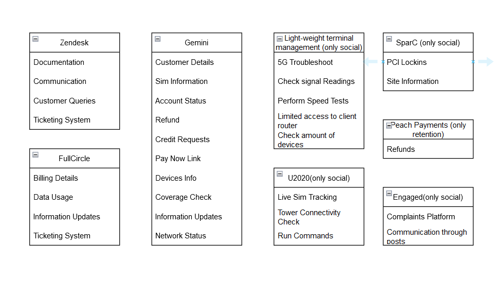

WHAT HAVE WE LEARNT?
We farmiliarised ourselfs with the team dynamics within the department ,as well as the tools used by the agents.
CURRENT SYSTEM

To decrease the amount of backlog, the system could filter out the cancellations of users that have overdue accounts to billing instead of retentions then billing could send information to help the customer with their billing. This will increase the amount of time that retentions could be used on other queries. Another way to decrease backlog is by adding a function that can be added to the system that will allow the agents to choose the template for a specific query that will automatically add the email to the dashboard with the information of the user that can still be edited. Already in use but most agents don't use it. The map on site is not as accurate so they can use Gemini's way of seeing coverage on the map to deter the cancellations of network.